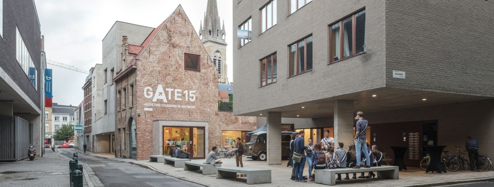

Atypische studentenstad
Antwerpen is niet zomaar een doorsnee studentenstad. De verhouding van het aantal studenten tot aantal inwoners is kleiner dan in andere studentensteden. Koppel dit aan het feit dat campussen en koten over heel de stad zijn verspreid en je krijgt een unieke dynamiek in de stad dat je nergens anders hebt.
tekst
tekst
tekst
GATE15
GATE15 is een aftakking van de non-profit organisatie Antwerpen Studentenstad. Ze werken samen met de stad en onderwijs maar zijn toch onafhankelijk en kunnen zelf initiatieven nemen. Het is niet enkel een fysieke locatie maar ook een groep van enthousiaste mensen die je doorheen het studentenleven in Antwerpen willen gidsen.
Wat doet gate15 (met links?)
- Informatie Helpdesk
- Digitaal platform
- Gidsen aanbieden
- Infrastructuur voor studeren (computers en studieruimte)
- Events (zoals StuDay en ADream)
- Cultuur Cheques
Praktische informatie
- Site!!!
- ADRES Kleine Kauwenberg 15, Antwerpen
- TEL +32 3 292 31 70
- Email info@gate15.be